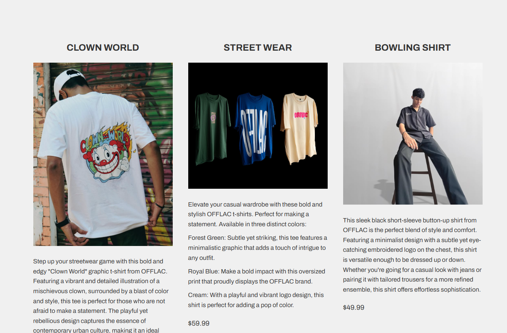

Website Design
OFFLAC Website
The OFFLAC Website was created to establish the brand’s digital groundwork. It became an important foundation for the later development of the OFFLAC App, helping shape the visual direction and online presence of the startup.

Overview
This website project focused on creating an online presence for OFFLAC that felt modern, clean, and aligned with the startup’s brand identity.
My Role
I designed the website experience and used it to help establish the visual and structural direction of the brand before moving into app design.
Problem
A startup brand needs a strong digital starting point. Before developing a more advanced product like an app, the brand needed a clear and cohesive online foundation.
Process
- Developed a visual style that matched the OFFLAC identity
- Focused on layout clarity and product presentation
- Considered how a website could introduce the brand effectively
- Used the website as groundwork for later app thinking
Solution
I created a website that introduced OFFLAC in a professional and visually organized way, helping define the startup’s digital presence.
Outcome
This project helped me understand how websites can support brand strategy and act as a foundation for future digital experiences.